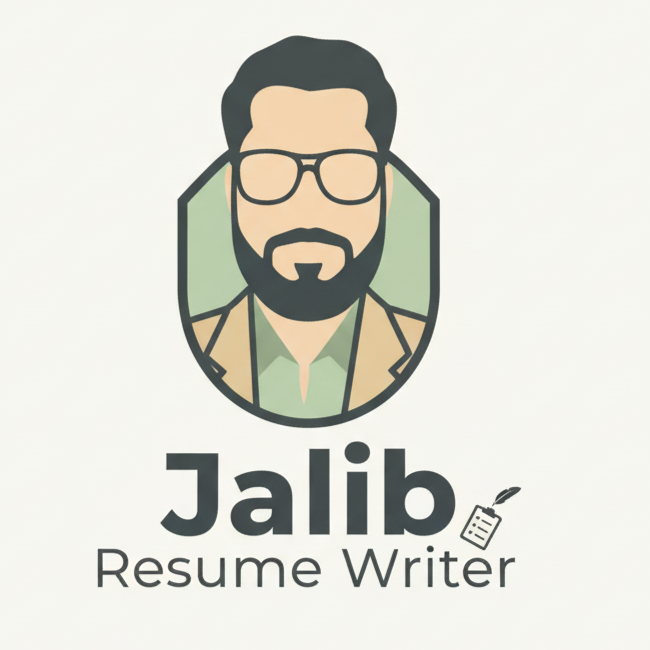

<!DOCTYPE html>
<!-- SEO: Specify language and region for better targeting -->
<html lang="en-IN">
<head>
    <meta charset="UTF-8">
    <meta name="viewport" content="width=device-width, initial-scale=1.0">

    <!-- =================================================================== -->
    <!-- ======================= SEO OPTIMIZATIONS ========================= -->
    <!-- =================================================================== -->

    <!-- META TITLE: Primary keyword first. Under 60 characters. This is the most important tag. -->
    <title>Free ATS Resume Checker & Expert Resume Writing Service | Jalib</title>

    <!-- GOOGLE SITE VERIFICATION: Confirms your ownership of the site -->
    <meta name="google-site-verification" content="jqlgFQgDGUR88-SyLCSC5QPZQ6NDlbqNtbCbot82Bhg" />

    <!-- META DESCRIPTION: Your 'ad' on Google. Under 160 characters, compelling, with keywords. -->
    <meta name="description" content="Get a free ATS score in seconds! Optimize your resume to beat the bots and land more interviews. Professional resume writing and tailoring services available.">

    <!-- CANONICAL URL: Prevents duplicate content issues by telling Google the main URL. -->
    <link rel="canonical" href="https://jalib.vercel.app/" />

    <!-- KEYWORDS: While less critical now, still good practice for context. -->
    <meta name="keywords" content="free ats resume checker, resume optimization, resume writing service, ats score free, resume tailoring, professional resume, free consultation, cv writing, get hired">

    <!-- ROBOTS TAG: Explicitly tells crawlers to index and follow links on the page. -->
    <meta name="robots" content="index, follow">

    <!-- OPEN GRAPH TAGS (for rich sharing on Facebook, LinkedIn, etc.) -->
    <meta property="og:title" content="Free ATS Resume Checker & Expert Writing Service | Jalib" />
    <meta property="og:description" content="Upload your resume and get a free ATS score instantly. Find out if your resume will pass the applicant tracking system and get expert help to improve it." />
    <meta property="og:url" content="https://jalib.vercel.app/" />
    <meta property="og:image" content="https://i.postimg.cc/hjtX8XYT/Gemini-Generated-Image-fiir1wfiir1wfiir.png" />
    <meta property="og:type" content="website" />
    <meta property="og:locale" content="en_IN" />

    <!-- TWITTER CARD TAGS (for rich sharing on Twitter) -->
    <meta name="twitter:card" content="summary_large_image">
    <meta name="twitter:title" content="Free ATS Resume Checker & Expert Writing Service | Jalib">
    <meta name="twitter:description" content="Is your resume ATS-friendly? Get a free score and detailed feedback in seconds with our resume checker tool.">
    <meta name="twitter:image" content="https://i.postimg.cc/hjtX8XYT/Gemini-Generated-Image-fiir1wfiir1wfiir.png">

    <!-- STRUCTURED DATA (SCHEMA MARKUP) - Helps Google understand your content for rich results -->
    <script type="application/ld+json">
    {
      "@context": "https://schema.org",
      "@type": "WebSite",
      "name": "Jalib Resume Services",
      "url": "https://jalib.vercel.app/",
      "potentialAction": {
        "@type": "SearchAction",
        "target": "https://jalib.vercel.app/?s={search_term_string}",
        "query-input": "required name=search_term_string"
      }
    }
    </script>
    <script type="application/ld+json">
    {
      "@context": "https://schema.org",
      "@type": "Service",
      "name": "Professional Resume Writing and Optimization Service",
      "description": "Expert resume writing, tailoring, and optimization services designed to beat Applicant Tracking Systems (ATS) and impress recruiters. We also offer a free ATS resume checker tool.",
      "provider": {
        "@type": "Person",
        "name": "Jalib"
      },
      "serviceType": "Resume Writing",
      "areaServed": {
        "@type": "Country",
        "name": "IN"
      }
    }
    </script>
    <script type="application/ld+json">
    {
      "@context": "https://schema.org",
      "@type": "FAQPage",
      "mainEntity": [{
        "@type": "Question",
        "name": "What is an ATS-friendly resume?",
        "acceptedAnswer": {
          "@type": "Answer",
          "text": "An ATS-friendly resume is formatted in a way that allows Applicant Tracking Systems (ATS) to easily parse and read the information. This means using standard fonts, clear headings like 'Work Experience', and relevant keywords from the job description to pass the initial screening."
        }
      },{
        "@type": "Question",
        "name": "How does the free ATS resume checker work?",
        "acceptedAnswer": {
          "@type": "Answer",
          "text": "Our free tool scans your resume for key elements that ATS software looks for, such as contact information, clear section headings, skills, and proper formatting. It then provides an instant score and actionable feedback to help you improve your resume and increase your chances of landing an interview."
        }
      },{
        "@type": "Question",
        "name": "Why do I need a professional resume writing service?",
        "acceptedAnswer": {
          "@type": "Answer",
          "text": "A professional resume writer helps you tell a compelling career story, highlights your key achievements with powerful metrics, and ensures your resume is perfectly tailored and optimized to pass both the ATS scan and the crucial 6-second human review by hiring managers."
        }
      }]
    }
    </script>
    
    <!-- ===================== END SEO OPTIMIZATIONS ======================= -->

    <!-- Tailwind CSS -->
    <script src="https://cdn.tailwindcss.com"></script>
    <!-- React Libraries -->
    <script src="https://unpkg.com/react@18/umd/react.development.js"></script>
    <script src="https://unpkg.com/react-dom@18/umd/react-dom.development.js"></script>
    <!-- Babel (NOTE: For production, this should be pre-compiled with a build step like Next.js) -->
    <script src="https://unpkg.com/@babel/standalone/babel.min.js"></script>

    <!-- Vercel Analytics Script -->
    <script>
      window.va = window.va || function () { (window.va.q = window.va.q || []).push(arguments); };
    </script>
    <script src="/_vercel/insights/script.js" defer></script>

</head>
<body>
    <div id="root"></div>

    <script type="text/babel">
        // --- React Application Code Starts Here ---
        const { useEffect, useRef, useState } = React;

        // --- Helper Components ---
        const ArrowDown = ({ className }) => (<svg xmlns="http://www.w3.org/2000/svg" width="24" height="24" viewBox="0 0 24 24" fill="none" stroke="currentColor" strokeWidth="2" strokeLinecap="round" strokeLinejoin="round" className={className}><path d="M12 5v14"/><path d="m19 12-7 7-7-7"/></svg>);
        const WhatsAppIcon = ({ className }) => (<svg xmlns="http://www.w3.org/2000/svg" width="24" height="24" viewBox="0 0 24 24" fill="currentColor" className={className}><path d="M.057 24l1.687-6.163c-1.041-1.804-1.588-3.849-1.587-5.946.003-6.556 5.338-11.891 11.893-11.891 3.181.001 6.167 1.24 8.413 3.488 2.245 2.248 3.481 5.236 3.48 8.414-.003 6.557-5.338 11.892-11.894 11.892-1.99-.001-3.951-.5-5.688-1.448l-6.305 1.654zm6.597-3.807c1.676.995 3.276 1.591 5.392 1.592 5.448 0 9.886-4.434 9.889-9.885.002-5.462-4.415-9.89-9.881-9.89-5.451 0-9.887 4.434-9.889 9.884-.001 2.225.651 3.891 1.746 5.634l-.999 3.648 3.742-.981zm11.387-5.464c-.074-.124-.272-.198-.57-.347-.297-.149-1.758-.868-2.031-.967-.272-.099-.47-.149-.669.149-.198.297-.768.967-.941 1.165-.173.198-.347.223-.644.074-.297-.149-1.255-.462-2.39-1.475-.883-.788-1.48-1.761-1.653-2.059-.173-.297-.018-.458.13-.606.134-.133.297-.347.446-.521.151-.172.2-.296.3-.495.099-.198.05-.372-.025-.521-.075-.148-.669-1.611-.916-2.206-.242-.579-.487-.5-.669-.51l-.57-.01c-.198 0-.52.074-.792.372s-1.04 1.016-1.04 2.479 1.065 2.876 1.213 3.074c.149.198 2.096 3.2 5.077 4.487.709.306 1.262.489 1.694.626.712.227 1.36.195 1.871.118.571-.085 1.758-.719 2.006-1.413.248-.695.248-1.29.173-1.414z"/></svg>);
        const UnlockKey = ({ className }) => (<svg xmlns="http://www.w3.org/2000/svg" width="24" height="24" viewBox="0 0 24 24" fill="none" stroke="currentColor" strokeWidth="2" strokeLinecap="round" strokeLinejoin="round" className={className}><rect x="3" y="11" width="18" height="11" rx="2" ry="2"></rect><path d="M7 11V7a5 5 0 0 1 10 0v4"></path></svg>);
        const Button = ({ children, className, ...props }) => (<button className={`inline-flex items-center justify-center rounded-xl font-semibold transition-all duration-300 focus:outline-none focus:ring-2 focus:ring-offset-2 focus:ring-orange-500 ${className}`} {...props}>{children}</button>);

        // --- ATS Checker Page Component (Original functionality preserved, adapted for overlay) ---
        const ATSCheckerPage = ({ onBack }) => {
            const [parsedText, setParsedText] = useState("");
            const [atsScore, setAtsScore] = useState(null);
            const [atsFeedback, setAtsFeedback] = useState("");
            const [isLoading, setIsLoading] = useState(false);
            const fileInputRef = useRef(null);
            useEffect(() => {
                const pdfScript = document.createElement('script');
                pdfScript.src = "https://cdnjs.cloudflare.com/ajax/libs/pdf.js/2.11.338/pdf.min.js";
                pdfScript.async = true;
                document.body.appendChild(pdfScript);
                const mammothScript = document.createElement('script');
                mammothScript.src = "https://cdnjs.cloudflare.com/ajax/libs/mammoth/1.4.2/mammoth.browser.min.js";
                mammothScript.async = true;
                document.body.appendChild(mammothScript);
                return () => {
                    document.body.removeChild(pdfScript);
                    document.body.removeChild(mammothScript);
                }
            }, []);
            const normalizeSpaces = (text) => text.replace(/\s+/g, " ").trim();
            const grammarCheck = (text) => (text.match(/\bis\b\s+are\b|\bhas\b\s+have\b/gi) || []).length;
            const calculateATS = (text) => {
                let score = 100;
                let issues = [];
                if (!/^[A-Z][a-z]+/.test(text.split("\n")[0])) { score -= 10; issues.push("Name not detected at top"); }
                if (!text.match(/\+?\d{7,}/) || !text.match(/@/) || !text.match(/linkedin\.com|http/)) { score -= 15; issues.push("Missing phone/email/linkedin"); }
                const summaryMatch = text.match(/Professional Summary([\s\S]*?)(Key Skills|Work Experience|Education)/i);
                if (!summaryMatch) { score -= 20; issues.push("No professional summary found"); } else {
                    const summary = summaryMatch[1];
                    if (summary.split(/[.!?]/).filter(Boolean).length > 6) { score -= 5; issues.push("Professional summary is too long"); }
                    const grammarErrors = grammarCheck(summary);
                    if (grammarErrors > 0) { score -= grammarErrors * 2; issues.push(`${grammarErrors} potential grammar issues`); }
                }
                const workExperienceMatch = text.match(/Work Experience([\s\S]*?)(Education|Skills|Projects|$)/i);
                if (workExperienceMatch) {
                    const workText = workExperienceMatch[1];
                    if ((workText.match(/[•*–-]/g) || []).length < 3) { score -= 10; issues.push("Use more bullet points in work experience"); }
                    if (!/Manager|Developer|Engineer|Analyst|Intern|Merchandiser|Category/i.test(workText)) { score -= 5; issues.push("Job roles may not be clear"); }
                } else { score -= 15; issues.push("Work experience section not found"); }
                return { score: Math.max(score, 0), issues };
            };
            const handleFileParse = async (file) => {
                if (!file) return;
                setIsLoading(true); setAtsScore(null); setAtsFeedback("");
                try {
                    let textContent = "";
                    if (file.type === "application/pdf") {
                        const pdfjsLib = window.pdfjsLib; if (!pdfjsLib) throw new Error("PDF.js not loaded");
                        pdfjsLib.GlobalWorkerOptions.workerSrc = `https://cdnjs.cloudflare.com/ajax/libs/pdf.js/2.11.338/pdf.worker.min.js`;
                        const pdf = await pdfjsLib.getDocument({ data: await file.arrayBuffer() }).promise;
                        for (let i = 1; i <= pdf.numPages; i++) {
                            const page = await pdf.getPage(i); const text = await page.getTextContent();
                            textContent += text.items.map((item) => item.str).join(" ") + "\n";
                        }
                    } else if (file.name.endsWith(".docx")) {
                        const mammoth = window.mammoth; if (!mammoth) throw new Error("Mammoth.js not loaded");
                        const result = await mammoth.extractRawText({ arrayBuffer: await file.arrayBuffer() });
                        textContent = result.value;
                    } else { textContent = await file.text(); }
                    setParsedText(normalizeSpaces(textContent));
                } catch (error) { console.error("File parsing error:", error); setAtsFeedback("Error parsing file. Please try again."); } 
                finally { setIsLoading(false); }
            };
            const handleCheckATS = () => {
                if (!parsedText) { setAtsFeedback("Please upload a resume first."); return; }
                const { score, issues } = calculateATS(parsedText);
                setAtsScore(score); setAtsFeedback(issues.length > 0 ? issues.join(" | ") : "Excellent! Your resume meets key ATS standards.");
            };
            const CircleProgress = ({ score }) => {
                const radius = 60; const circumference = 2 * Math.PI * radius;
                const offset = circumference - (score / 100) * circumference;
                const color = score > 75 ? 'stroke-green-500' : score > 50 ? 'stroke-yellow-500' : 'stroke-red-500';
                return (<div className="relative flex items-center justify-center w-40 h-40"><svg className="transform -rotate-90 w-full h-full"><circle className="text-gray-200" strokeWidth="12" stroke="currentColor" fill="transparent" r={radius} cx="50%" cy="50%" /><circle className={color} strokeWidth="12" strokeDasharray={circumference} strokeDashoffset={offset} strokeLinecap="round" fill="transparent" r={radius} cx="50%" cy="50%" style={{transition: 'stroke-dashoffset 0.5s ease-in-out'}} /></svg><span className="absolute text-4xl font-bold text-gray-800">{score}</span></div>);
            };
            return (
                <section aria-labelledby="ats-checker-title" className="w-full h-full bg-white bg-opacity-90 backdrop-blur-sm p-4 sm:p-6 lg:p-8 overflow-y-auto">
                    <Button onClick={onBack} className="absolute top-4 left-4 bg-white hover:bg-gray-100 text-gray-800 px-4 py-2 shadow-md">&larr; Back to Home</Button>
                    <div className="w-full max-w-4xl mx-auto py-16">
                        <h1 id="ats-checker-title" className="text-3xl md:text-4xl font-extrabold text-center text-orange-600 mb-8">Free ATS Resume Checker</h1>
                        <div className="w-full p-8 border-2 border-dashed border-gray-300 rounded-2xl text-center cursor-pointer hover:border-orange-500 hover:bg-orange-50 transition-colors bg-white" onClick={() => fileInputRef.current.click()} onDrop={(e) => { e.preventDefault(); handleFileParse(e.dataTransfer.files[0]); }} onDragOver={(e) => e.preventDefault()}>
                            <input type="file" ref={fileInputRef} onChange={(e) => handleFileParse(e.target.files[0])} accept=".pdf,.docx,.txt" className="hidden" />
                            <p className="text-gray-600">{isLoading ? "Processing..." : (parsedText ? "File loaded. Ready to check." : "Drag & drop your resume here, or click to select")}</p>
                        </div>
                        <div className="text-center mt-6">
                            <Button onClick={handleCheckATS} disabled={isLoading || !parsedText} className="bg-orange-500 hover:bg-orange-600 text-white text-lg px-8 py-3 disabled:bg-gray-400">Check My ATS Score</Button>
                        </div>
                        {atsScore !== null && (
                            <div className="mt-12 text-center">
                                <div className="flex flex-col md:flex-row items-center justify-center gap-8">
                                    <div className="flex flex-col items-center">
                                        <h2 className="text-2xl font-bold mb-4 text-gray-800">Your ATS Score</h2>
                                        <CircleProgress score={atsScore} />
                                        <p className="mt-4 text-gray-600 max-w-sm">{atsFeedback}</p>
                                    </div>
                                    <div className="w-full md:w-1/2 bg-white p-6 rounded-2xl shadow-md">
                                        <h3 className="text-xl font-bold mb-4 text-left text-gray-800">Resume Analysis</h3>
                                        <div className="space-y-3 text-left">
                                            {['Content', 'Formatting', 'Keywords', 'Skills'].map(item => (<div key={item}><span className="font-semibold text-gray-700">{item}</span><div className="w-full bg-gray-200 rounded-full h-2.5 mt-1"><div className="bg-orange-500 h-2.5 rounded-full" style={{width: `${Math.floor(Math.random() * (95 - 60 + 1) + 60)}%`}}></div></div></div>))}
                                        </div>
                                    </div>
                                </div>
                                <div className="mt-10 bg-orange-50 p-6 rounded-2xl">
                                    <h3 className="text-2xl font-bold text-orange-600">Improve Your Score & Get Hired</h3>
                                    <p className="my-3 text-gray-700">Let's craft a resume that gets you the interview. Get expert help now.</p>
                                    <div className="flex flex-wrap justify-center gap-4">
                                        <a href="https://docs.google.com/forms/d/e/1FAIpQLSf9I1MApaTyuwxTncp8CHnM4Ra4PohgASDhImLv0Bd7oCsy5w/viewform?usp=header" target="_blank" rel="noopener noreferrer"><Button className="bg-gray-800 hover:bg-gray-900 text-white px-6 py-3">📋 Request Free Consultation</Button></a>
                                        <a href="https://wa.me/916005795693?text=I'm interested in your resume services after checking my ATS score." target="_blank" rel="noopener noreferrer"><Button className="bg-green-500 hover:bg-green-600 text-white px-6 py-3">📲 Chat on WhatsApp</Button></a>
                                    </div>
                                </div>
                            </div>
                        )}
                    </div>
                </section>
            );
        };
        
        // --- Presentation Slide Component ---
        const Slide = ({ children, className, id }) => {
            const [ref, inView] = useInView({ threshold: 0.5 });

            return (
                <section 
                    ref={ref}
                    id={id}
                    className={`
                        w-full h-[100dvh] snap-start flex-shrink-0 flex items-center justify-center p-4 pt-24 sm:pt-28 relative 
                        ${className}
                    `}
                >
                    <div className={`
                        w-full max-w-5xl mx-auto text-center transition-all duration-1000 ease-in-out
                        ${inView ? 'opacity-100 translate-y-0 scale-100' : 'opacity-0 translate-y-12 scale-95'}
                    `}>
                        {children}
                    </div>
                </section>
            );
        };
        
        // Custom hook for Intersection Observer
        const useInView = (options) => {
            const [inView, setInView] = useState(false);
            const ref = useRef(null);
            useEffect(() => {
                const observer = new IntersectionObserver(([entry]) => {
                    setInView(entry.isIntersecting);
                }, options);
                const currentRef = ref.current;
                if (currentRef) {
                    observer.observe(currentRef);
                }
                return () => {
                    if (currentRef) {
                        observer.unobserve(currentRef);
                    }
                };
            }, [ref, options]);
            return [ref, inView];
        };

        // --- Main App Component (New Presentation Logic) ---
        function App() {
            const [view, setView] = useState('landing');
            const [isHeaderDocked, setIsHeaderDocked] = useState(false);
            const firstSlideRef = useRef(null);

            const handleLogoClick = () => {
                const architectSection = document.getElementById('architect-slide');
                if (architectSection) {
                    architectSection.scrollIntoView({ behavior: 'smooth', block: 'start' });
                }
            };
            
            useEffect(() => {
                const observer = new IntersectionObserver(
                    ([entry]) => {
                        setIsHeaderDocked(!entry.isIntersecting);
                    },
                    { threshold: 0.6 }
                );

                const currentRef = firstSlideRef.current;
                if (currentRef) {
                    observer.observe(currentRef);
                }

                return () => {
                    if (currentRef) {
                        observer.unobserve(currentRef);
                    }
                };
            }, []);
            
            const slideData = [
                {
                    id: 'first-slide',
                    title: "Beat the Bots & Get Hired",
                    subtitle: "Stop guessing if your resume is good enough. Get an instant, free ATS score and let our experts craft a resume that lands you interviews.",
                    img: "https://i.postimg.cc/hjtX8XYT/Gemini-Generated-Image-fiir1wfiir1wfiir.png",
                    alt: "A robot gatekeeper scanning a resume, symbolizing an Applicant Tracking System (ATS).",
                    bgColor: "bg-orange-50",
                },
                {
                    id: 'second-slide',
                    title: "Stuck in the 'Under Review' Abyss? 👻",
                    text: 'Your resume is your first impression. If it’s not optimized for Applicant Tracking Systems (ATS), it might never be seen by human eyes. Stop getting ghosted by recruiters.',
                    img: "https://i.postimg.cc/xC6bBvm6/Gemini-Generated-Image-5nnzhg5nnzhg5nnz.png",
                    alt: "A resume sitting in a forgotten digital file cabinet, illustrating getting ghosted by employers.",
                    bgColor: "bg-gray-50"
                },
                {
                    id: 'third-slide',
                    title: "Professional Resume Writing That Works 🍔",
                    text: "We craft a compelling career story for you, turning applications into interviews and interviews into offers.",
                    img: "https://i.postimg.cc/V62bYY7t/Gemini-Generated-Image-ukyueukyueukyueu.png",
                    alt: "A perfectly constructed resume, representing the secret sauce to a successful job application.",
                    bgColor: "bg-orange-50"
                },
                {
                    id: 'architect-slide',
                    title: "Meet Your Resume Architect",
                    text: "I specialize in crafting ATS-friendly resumes that don't just pass the robots, but also captivate human recruiters. My goal is to transform your professional journey from a simple document into a powerful narrative that gets you hired. Let's build your success story together.",
                    img: "assets/YOUR_PHOTO.png",
                    alt: "Jalib, professional resume writer and career consultant.",
                    bgColor: "bg-gray-800",
                    textColor: "text-white",
                    isFinal: true
                }
            ];

            useEffect(() => {
                let title = view === 'landing' 
                    ? "Free ATS Resume Checker & Expert Resume Writing Service | Jalib" 
                    : "Check Your ATS Score for Free | Jalib Resume Optimizer";
                document.title = title;
                if (window.va) {
                    window.va('track', 'pageview', { path: view === 'landing' ? '/' : '/ats-checker' });
                }
            }, [view]);

            return (
                <React.Fragment>
                    <style>{`
                        /* Key styles for presentation mode */
                        .presentation-container {
                            scroll-snap-type: y mandatory;
                            overflow-y: scroll;
                            height: 100vh; /* Fallback for older browsers */
                            height: 100dvh; /* Dynamic viewport height for mobile */
                        }
                        /* Hide scrollbar for a cleaner look */
                        .presentation-container::-webkit-scrollbar { display: none; }
                        .presentation-container { -ms-overflow-style: none; scrollbar-width: none; }
                        
                        @keyframes bounce { 0%, 20%, 50%, 80%, 100% { transform: translateY(0); } 40% { transform: translateY(-15px); } 60% { transform: translateY(-8px); } }
                        .animate-bounce-slow { animation: bounce 2.5s infinite; }
                        
                        /* Glowing Button Animation */
                        @keyframes glow {
                            0%, 100% { box-shadow: 0 0 6px #f59e0b, 0 0 12px #f59e0b; }
                            50% { box-shadow: 0 0 12px #fbbf24, 0 0 24px #fbbf24; }
                        }
                        .animate-glow { animation: glow 2s infinite ease-in-out; }

                        /* Logo Animation */
                        @keyframes pulse-zoom {
                            0%, 100% { transform: scale(1) rotate(0deg); }
                            50% { transform: scale(1.1) rotate(5deg); }
                        }
                        .animate-pulse-zoom { animation: pulse-zoom 3s infinite ease-in-out; }
                    `}</style>
                    <div className="bg-white font-sans text-gray-800">
                        {/* Animated Header Elements */}
                        {view === 'landing' && (
                            <>
                                <div 
                                    onClick={handleLogoClick}
                                    className={`
                                        fixed z-40 cursor-pointer p-2 bg-white/50 backdrop-blur-sm rounded-full shadow-lg transition-all duration-700 ease-in-out
                                        ${isHeaderDocked 
                                            ? 'top-4 left-4 w-16 h-16' 
                                            : 'top-6 left-1/2 -translate-x-1/2 w-28 h-28 animate-pulse-zoom'
                                        }
                                    `}
                                >
                                     { e.target.onerror = null; e.target.src='https://placehold.co/112x112/F97316/FFF?text=J'; }} />
                                </div>
                                
                                <div className={`
                                    fixed z-30 transition-all duration-700 ease-in-out
                                    ${isHeaderDocked ? 'top-6 right-4 opacity-100' : 'top-full opacity-0'}
                                `}>
                                     <Button onClick={() => setView('ats')} className="bg-white hover:bg-gray-100 text-orange-600 font-bold text-sm px-4 py-2 shadow-lg border border-orange-200">
                                        Check ATS Score
                                    </Button>
                                </div>
                            </>
                        )}


                        {/* Landing Page Presentation */}
                        <main className={`presentation-container transition-opacity duration-500 ${view === 'landing' ? 'opacity-100' : 'opacity-0 pointer-events-none'}`}>
                            {slideData.map((slide, i) => (
                                <div key={slide.id} ref={i === 0 ? firstSlideRef : null}>
                                    <Slide 
                                        id={slide.id}
                                        className={`${slide.bgColor} ${slide.textColor || 'text-gray-800'}`}
                                    >
                                        <div className="flex flex-col lg:flex-row items-center justify-center gap-8 md:gap-12 w-full">
                                           {slide.img && (
                                                <div className="w-48 h-48 sm:w-64 sm:h-64 lg:w-80 lg:h-80 flex-shrink-0 order-1 lg:order-none">
                                                     
                                                </div>
                                           )}
                                           
                                            <div className="flex flex-col items-center lg:items-start lg:text-left max-w-md order-2 lg:order-none">
                                                <h1 className="text-3xl sm:text-4xl md:text-5xl font-extrabold leading-tight">
                                                    {slide.title}
                                                </h1>
                                                <p className={`mt-4 text-base sm:text-lg max-w-prose ${slide.textColor ? 'text-gray-300' : 'text-gray-600'}`}>
                                                    {slide.subtitle || slide.text}
                                                </p>
                                                
                                                {slide.id === 'first-slide' && (
                                                    <div className={`mt-8 flex flex-col items-center gap-4 transition-opacity duration-500 ${isHeaderDocked ? 'opacity-0' : 'opacity-100'}`}>
                                                        <Button onClick={() => setView('ats')} className="bg-orange-500 hover:bg-orange-600 text-white text-lg px-8 py-4 shadow-lg transform hover:scale-105">
                                                            Check Your ATS Score Free
                                                        </Button>
                                                         <div className="flex flex-col items-center gap-1 opacity-70">
                                                            <span className="text-sm font-semibold">Scroll Down</span>
                                                            <ArrowDown className="w-5 h-5 animate-bounce-slow" />
                                                        </div>
                                                    </div>
                                                )}
                                                
                                                {slide.isFinal && (
                                                    <div className="mt-8 flex flex-col md:flex-row items-center justify-center lg:justify-start gap-4 w-full px-4 sm:px-0">
                                                        <a href="https://wa.me/916005795693" target="_blank" rel="noopener noreferrer" className="w-full md:w-auto">
                                                            <Button className="bg-green-500 hover:bg-green-600 text-white text-lg px-8 py-4 shadow-lg w-full transform hover:scale-105">
                                                                Chat on WhatsApp <WhatsAppIcon className="ml-2 w-5 h-5" />
                                                            </Button>
                                                        </a>
                                                    </div>
                                                )}

                                            </div>
                                        </div>
                                    </Slide>
                                </div>
                            ))}
                        </main>

                        {/* ATS Checker View (Overlay) */}
                        <div className={`fixed inset-0 z-50 transition-opacity duration-500 ${view === 'ats' ? 'opacity-100' : 'opacity-0 pointer-events-none'}`}>
                            <ATSCheckerPage onBack={() => setView('landing')} />
                        </div>
                        
                        {/* Fixed Premium Button */}
                        {view === 'landing' && (
                             <a href="https://rzp.io/rzp/jalib" target="_blank" rel="noopener noreferrer" className="fixed bottom-5 left-1/2 -translate-x-1/2 z-40">
                                <Button className="bg-orange-500 hover:bg-orange-600 text-white font-bold text-base px-6 py-4 shadow-2xl rounded-full transform transition-transform hover:scale-110 duration-300 animate-glow">
                                   <UnlockKey className="w-5 h-5 mr-2" />
                                   Unlock Premium Hacks for ₹49 only
                                </Button>
                            </a>
                        )}
                    </div>
                </React.Fragment>
            );
        }

        // --- Render the App ---
        const container = document.getElementById('root');
        const root = ReactDOM.createRoot(container);
        root.render(<App />);

    </script>
</body>
</html>


